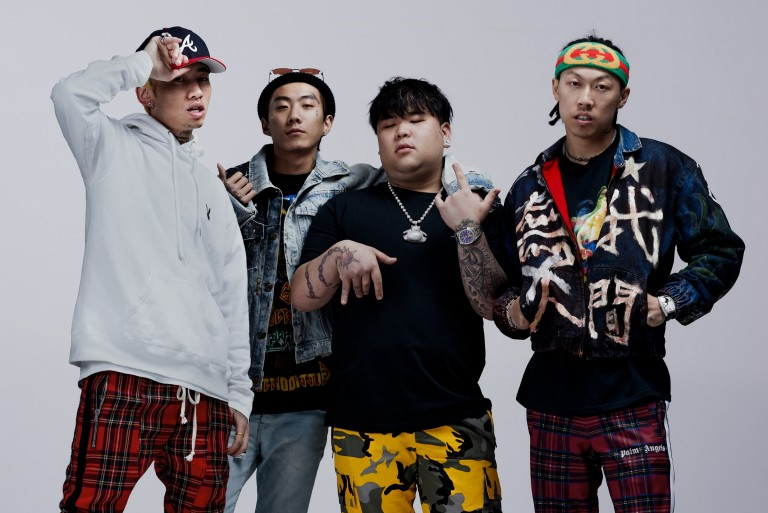

更高兄弟/Higher Brothers
- 马思唯（1993 - ），绰号“马师”，早期名为OG Skippy，更高兄弟队长，来自成都郫县。
马思唯很小的时候就迷上了嘻哈音乐，他提到他的一些灵感来自50 Cent和他的专辑《Get Rich or Die Tryin’》。他于2013年加入成都说唱会馆。
- 丁震（1996 - ），英文名KnowKnow，来自南京。
丁震在青少年时期曾有不少志向，最想成为一名宇航员。他的嘻哈灵感来自Lil John和Ludacris的《Yeah》。在向马思唯购买了一个伴奏之后，他通过微博与团队其他成员建立了联系。
- 杨俊逸（1994 - ），英文名Psy.p，来自成都。
杨俊逸受到T.I.和李尔·韦恩的启迪。2011年加入成都说唱会馆，后来与Melo成立双人组合“天地会”。
- 谢宇杰（1994 - ），英文名Melo，来自成都。
在2011年加入成都说唱会馆之前，谢宇杰一直渴望成为职业足球运动员。
